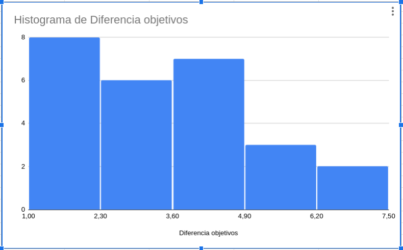

Nuevas metodologías de enseñanza/aprendizaje: enseñanza basada en proyecto
Charla para equipo interdisciplinar, ETSICCP
Sobre mi
37º años en la UGR.
Clases en Informática, Telecos, máster,
doctorado... Cursos de verano, Platzi...
Padre de tres hijas graduadas en
UGR
Estudiante de 1º de Historia del Arte
Alguna vez te has dicho
"Los estudiantes se copian"
"... no atienden "
"Qué aburrido es corregir"
"Qué aburrido es repetir las lecciones
todos los años/diferentes grupos"
"Sólo hay 1/2 estudiantes implicados"
Objetivos de aprendizaje de esta sesión
① Comprender los procesos básicos de
enseñanza/aprendizaje
② Deconstruir el acto de evaluación y contemplar
alternativas
③ Conocer diferentes metodologías de
impartición
Ayudar al estudiante a adquirir competencias
Un objetivo de aprendizaje es
una competencia o habilidad
concreta
que el estudiante debe
adquirir para poder emplear.
¿Qué tipo de competencias hay?
Saber hacer, entender, completar, organizar...
Muy pocas son "recordar"
O ninguna
Todas son actitudes del estudiante
¿Tiene sentido que la enseñanza no se centre en el estudiante?
¿Se está comprobando que el estudiante alcanza esos objetivos de aprendizaje?
Benjamin Franklin dijo
Dime y lo olvido, enséñame y lo
recuerdo, involúcrame y lo aprendo
Para que el estudiante se involucre...
Aprendizaje basado en
proyecto (ABP)/misión
Los estudiantes desarrollan un proyecto propio
a lo largo del curso
Solos o en equipo
El proyecto debe ir cubriendo los objetivos de
aprendizaje
Y evaluándose de forma
continua
Los proyectos tienen entregables
Con plazos fijos o no
Esencial
controlar el desarrollo del proyecto
Los proyectos acercan a la
realidad laboral
El estudiante administra el paso
Se establecen unos mínimos para
aprobar.
El proyecto
Desarrolla la confianza en sí mismo
del estudiante
Reduce la posibilidad de
plagio*
Permite un seguimiento
personalizado del estudiante
El proyecto se puede vender/presentar al
final
Competencias "horizontales":
capacidad de presentación, sintetización, expresión.
Posibilidades de colaboración entre
asignaturas/cursos
Colaboración entre
asignaturas/departamentos, ese animal
mitológico
Pero sobre todo...
Permite una evaluación no
memorística y más alineada con los
objetivos de aprendizaje.
¿Qué es evaluar?
Dilucidar qué objetivos de
aprendizaje se han alcanzado
También una oportunidad para el
aprendizaje
¿Es la corrección al proyecto
algo más que una nota?
¿Cuándo se dan los resultados de la
evaluación?
¿Se acaba la posibilidad de
aprender en el acto de evaluación?
¿Quién evalúa al evaluador?
Una evaluación es retroalimentación de
nuestro desempeño
La evaluación siempre es
mutua
Los resultados dicen cómo has
ayudado a los estudiantes a aprender
Conocer al estudiante para saber qué factores
ayudan al éxito (o fracaso)
Los estudiantes necesitan tiempo para el
proyecto
Clase invertida
Alternativa a la clase magistral
Esencialmente, no des la
chapa
Flipped class "clásica"
Material preparado con antelación,
vídeo
Clase sólo para
preguntas
Clase invertida moderna
No des la chapa más de lo
estrictamente necesario
Explicaciones bajo demanda
Interacción directa con estudiante
o grupos de estudiantes
Observación de la metodología de
trabajo del estudiante y sugerencias a punto.
Muy bien adaptada a ABP
Se va siguiendo el progreso del
estudiante en las diferentes etapas
Cada interacción con el estudiante es
formativa
Y también evaluativa
Combinando ABP/clase invertida con evaluación
formativa
Metodologías centradas en el estudiante
Convertir cada evaluación en una posibilidad de
aprendizaje
Eliminación de las notas
Se busca consecución de objetivos
En la evaluación indica qué hace falta
para superar el objetivo
Se trabaja hasta que se supera el objetivo
Bien adaptado a ABP
Ciclo envío → retroalimentación
hasta que se supera el objetivo
O no se ve una mejora en
los últimos ciclos.
Permite un seguimiento muy estrecho del
estudiante
Y le facilita la superación de los
objetivos de aprendizaje.
Diferencia entre objetivos deseados y
obtenidos

Transparencia en las calificaciones
Liberación cuando se han
alcanzado los objetivos mínimos
Ayuda a alcanzar los objetivos de
aprendizaje